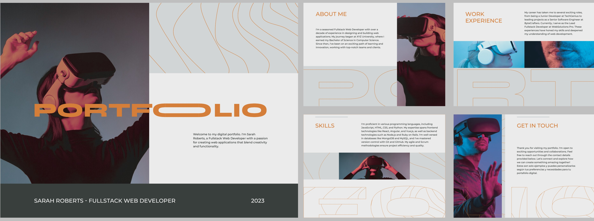

Navigating the Digital Landscape
Criptonx March 7 2024 Insight
Strategies for Marketing Your Videography and Photography Services Online
In today's digital age, an effective online presence is crucial for success in the competitive world of videography and photography. With countless platforms and strategies available, navigating the digital landscape can seem daunting. However, by implementing the right strategies and leveraging the power of digital marketing, you can effectively showcase your services, reach your target audience, and grow your business. Here are some key strategies for marketing your videography and photography services online:
1.Create a Professional Website
Your website serves as your online storefront and is often the first impression potential clients will have of your business. It's essential to create a professional, visually appealing website that showcases your portfolio, services, and brand identity. Ensure your website is mobile-responsive, easy to navigate, and optimized for search engines to improve your visibility online.2.Showcase Your Portfolio
 Your portfolio is your most powerful marketing tool—it demonstrates your skills, style, and expertise to potential clients. Curate a selection of your best work that highlights your strengths and showcases the range of services you offer. Include case studies or client testimonials to provide social proof and build credibility.3. Leverage Social Media
Social media platforms offer a powerful way to connect with your audience, showcase your work, and build relationships with potential clients. Identify which platforms your target audience frequents—whether it's Instagram, Facebook, LinkedIn, or others—and create engaging content that resonates with them. Use a mix of photos, videos, behind-the-scenes footage, and client testimonials to showcase your skills and personality.4. Implement SEO Strategies
Search engine optimization (SEO) is essential for improving your website's visibility in search engine results and attracting organic traffic. Conduct keyword research to identify relevant search terms related to your services, and optimize your website's content, metadata, and images accordingly. Regularly publish high-quality content, such as blog posts or tutorials, to demonstrate your expertise and attract visitors to your site.5.Invest in Paid Advertising
While organic marketing strategies are valuable, paid advertising can help you reach a wider audience and generate leads more quickly. Consider investing in pay-per-click (PPC) advertising on platforms like Google Ads or social media advertising on platforms like Facebook or Instagram. Target your ads to specific demographics, interests, or geographic locations to ensure they reach the right audience.6. Network and Collaborate
Building relationships with fellow professionals in your industry can lead to valuable partnerships and referrals. Attend networking events, join industry groups or associations, and collaborate with other videographers, photographers, or creative professionals on projects. By expanding your network and sharing resources, you can increase your visibility and reach new clients.7. Offer Special Promotions or Discounts
Everyone loves a good deal, so consider offering special promotions or discounts to incentivize potential clients to book your services. Whether it's a limited-time discount on wedding photography packages or a free consultation for corporate videography projects, promotions can help drive conversions and attract new clients.8.Collect and Showcase Client Testimonials
Client testimonials are powerful social proof that can help build trust and credibility with potential clients. Collect testimonials from satisfied clients and showcase them on your website, social media profiles, or marketing materials. Encourage clients to leave reviews on platforms like Google My Business orIn conclusion, marketing your videography and photography services online requires a strategic approach and a comprehensive understanding of digital marketing tactics. By creating a professional website, showcasing your portfolio, leveraging social media, implementing SEO strategies, investing in paid advertising, networking with industry professionals, offering special promotions, and collecting client testimonials, you can effectively navigate the digital landscape and grow your business online. With the right strategies in place, you can attract more clients, increase your visibility, and achieve long-term success in the competitive world of videography and photography.